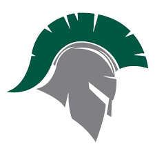

NeyVan Diaz

My name is NeyVan Diaz I have curly hair and dark eyes and Hispanic, I have a girlfriend right now named Natalee. I am a freshman at York Tech and i am almost done my first year I plan to go back to my homeschoolWhich is West York to play football. And im currently doing I.T for tech I am 15 and I turn 16 on October 9. my favorate hobby is to play football and watch Basketball I love the Miami Heat and New York Giants if i had to pick what player is my favorite on each it would be Jimmy Butler and Saquon Barkley those two inspire me escpically Jimmy Butler I can go on and on about sports and thats what im passionate about.We have done certian Task on RPG maker and Vs Code in this class
page 2 RPG